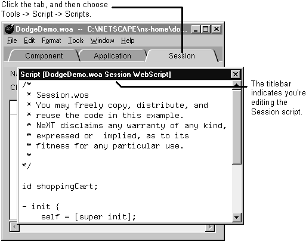

The script window shows you the current component's script. All of the variables and methods shown in the object browser are declared in the script.
To open the script window, choose Tools->Script->Scripts or press the script button on the
component window.
The script window changes its display as the main window changes. If the main window is
a component window, the script window shows you that component's script. If the main window is the application window and the application tab is selected, the script window shows
you application script. Similarly, if the session tab is selected, the script window shows you
the session script.
When you're editing a script, be careful that you are editing the correct script. Check the
window's titlebar to see which script you are editing.

|  Table of Contents
Table of Contents
 Previous Section
Previous Section
 Next Section
Next Section